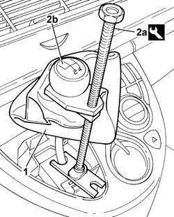
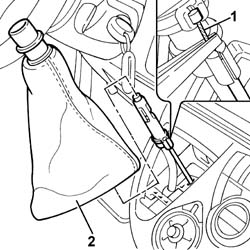
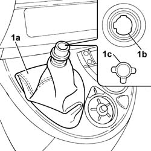
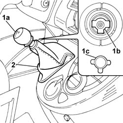

2125C24 GEAR LEVER KNOB - R + R
- Path
- Procedures > 21 GEARBOX UNIT > 2125 MANUAL GEARBOX EXTERNAL CONTROLS > 2125C MANUAL GEARBOX EXTERNAL CONTROL (CABLES) > 2125C24 GEAR LEVER KNOB - R + R
- Kind
- repair procedure (removal / refitting; the operation number is the code)
- Applies to
- engines: 2.0 16v, 2.0 16V JTD, 2.2 16V JTD; all production periods
- Interactive page
- https://sloeber94.github.io/elrnDB-fUlss/en/#/179007237
Applies to: engines: 2.0 16v, 2.0 16V JTD, 2.2 16V JTD; all production periods
 Removing
Removing
 Refitting
Refitting1. Release the gear lever outer boot.
2. Position the tool (2a) and remove the gear lever grip (2b).
 | Description | Code | Function |
|---|---|---|---|
2a | Extractor | 1.870.668.000 | Gear lever grip extraction |

Applies to: engines: 2.0 16v, 2.0 16V JTD, 2.2 16V JTD; all production periods
- Lift up the gear lever outer boot.
1. Disconnect the reverse gear engagement inhibitor control.
2. Remove the gear lever outer boot.

Applies to: engines: 2.0 16v, 2.0 16V JTD, 2.2 16V JTD; all production periods
Refitting
Removing1. Position the gear lever outer boot (1a) and make sure the references (1b) and (1c) are aligned.

Applies to: engines: 2.0 16v, 2.0 16V JTD, 2.2 16V JTD; all production periods
- Connect the reverse gear engagement inhibitor control.
1. Position the gear lever grip (1a) and make sure the references (1b) and (1c) are aligned.
2. Position the gear lever outer boot.

Topics that link to this page (16)
- 2125C28 GEAR CONTROL LEVER - R R
- 2125C30 GEAR ENGAGEMENT CABLE - R R
- 5010B24 UNDER-FACIA AIR DUCTS R R
- 5010B39 FRONT CONNECTION FOR CENTRAL AIR DUCT TO REAR SEATS - R R
- 5010B45 DUCT FROM CLIMATE CONTROL SYSTEM - R R
- 5040C13 AIR CONDITIONER HEATER/DISTRIBUTOR ASSEMBLY - R R
- 5040C22 AIR CONDITIONING FAN ASSEMBLY - R.R.
- 5040C50 AIR CONDITIONING HEATER RADIATOR - R.R.
- 5040C64 A/C MANUAL CONTROL SWITCH (ONE) - R+R
- 5040D75 AIR CONDITIONING RECIRCULATION FLAP CONTROL MOTOR - R.R.
- 5040D84 AIR CONDITIONER LEFT HAND AIR MIXER FLAP CONTROL MOTOR - R R
- 5040D90 AIR CONDITIONER SYSTEM WIRING BUNDLE - R R
- 7040A10 DASHBOARD TRIM - R+R
- 7040A66 CENTRE CONSOLE UNDER DASHBOARD - R.R.
- 7040A97 FACIA TRIM SUPPORT BEAM - R R
- 7040L17 PASSENGER COMPARTMENT FLOOR FRONT CARPET - R R